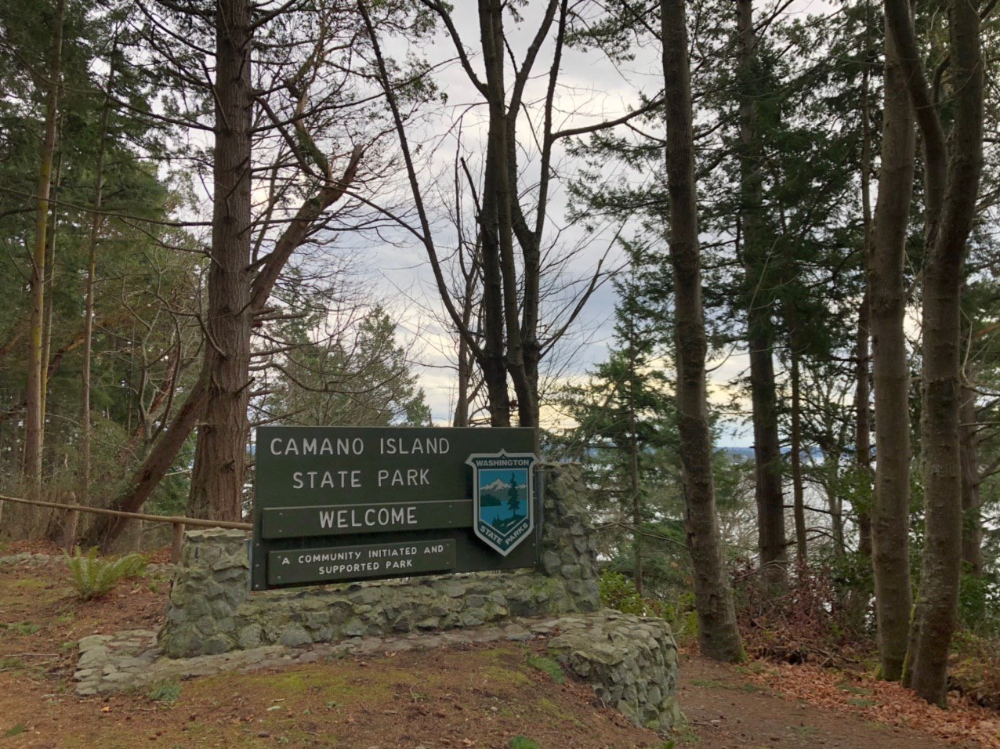
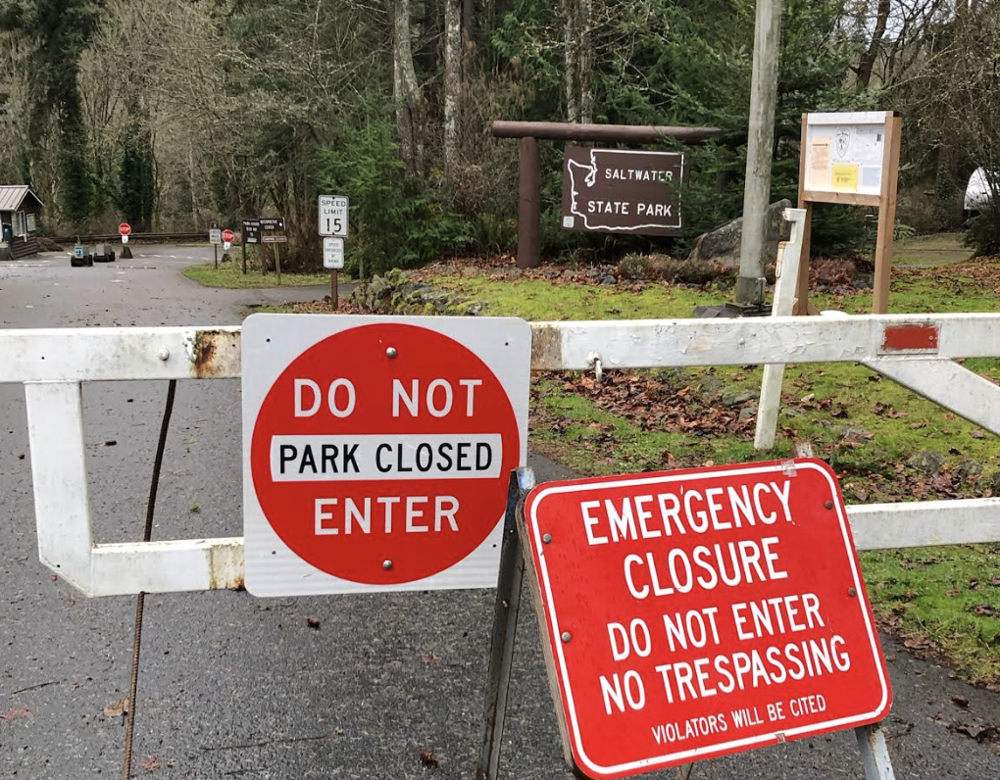

Introduction

We had lost our sense of adventure, mostly. With two small children packing the car and enduring road trip eventualities — soiled car seats, endless questions, whining — creates significant homebody inertia. Getting out, especially in the short, damp days of a Northwest Winter, was often just too much. We needed motivation.
Busy professionals with weak spots for childish competitions and games, one of us gifted the other a Washington State Parks checklist banner — thanks Etsy — for Christmas. The challenge was on, the game afoot. Visiting State Parks is a sizable reduction in both investment and payoff, from say, counting continents, countries or even National Parks. We had checked the map; done right we could probably do 5-7 parks some days. Our reward would be picnic shelters and boat launches not grand geologic formations and soul-stirring vistas. Playgrounds not postcards.
There are a lot of state parks in Washington State, 136 in all, and not all are accessible by car. The good money would be on us not finishing this quest…and that’s OK, its the journey we seek. In our pre-child mid-twenties, we once visited the Grand Coulee dam. We’ve been to the Mima Mounds, overnighted in Warnambool (twice) and weathered a typhoon in Toba. We are no strangers to long journeys with small payoffs. We’ve experienced – and enjoyed – being surrounded by retirees, RV people and empty parking lots. Though now we are two car seats strong and have a tiny collapsible toiled in the hatch. Adventure takes no universal form.
Current Stats
- 8 Visited (128 Remaining)
- 290.7 Miles Driven
- 11.7 Miles Ferried
- 5 Counties Visited
- Island
- King
- San Juan
- Skagit
- Snohomish
.
8) Camano Island:
- 2020-01-20
48.1269829 -122.5150792 | Map
- 49 Degrees, Windy and Overcast
- Miles Traveled: 66.8
Sighted: 1 Refrigerator of Frozen Tea
A few miles down the road from Cama Beach is Camano Island State Park. In place of the small cabins and structured sea wall is a wilder coast as the campgrounds and main park buildings are situated upland and away from the water.

The beach here has a more southerly aspect. Better for sun-bathing on a summer day, but headlong into today’s stiff breeze. 49 felt like 29 as the wind-driven waves pounded the shoreline in front of us. The Olympics and the Cascades, both currently snow-covered, are visible from the parking lot as its orientation points you directly down the Puget Sound and gap between the two. From some vantage points in Western Washington the ranges look distant; from here the Sound looks so very narrow.
Everett and I found a makeshift driftwood fort which we requisitioned and remodeled into a frontier shell store (and general mercantile). I was assigned shell collection duty whilst my partner manned the storefront. Resources were plentiful and soon our shelves were stocked. Few paying customers, however, on a day like today. The big win was convincing the store owner to leave behind his goods for the next kid.
8 Down, 128 to go.
.
7) Cama Beach:
- 2020-01-20
48.1452553 -122.5242631 | Map
- 49 Degrees, Windy and Overcast
- Miles Traveled: 48.9
Sighted: 1 flooded golf course

A re-purposed fishing resort from the 1930s, the defining features of Cama Beach are man-made. The small cabins, wooden boat museum and park support offices sit tightly clustered in a (mostly) automobile-free community right on the beach. New urbanism meets wilderness outpost meets Airbnb. Though the buildings had been restored and some modern conveniences added, on this steel gray day it wasn’t hard to imagine the resort in full swing during the 1930s. Shellfish and the day’s catch being unloaded and cleaned, wood fires burning, whiskey swilled and spilled.
Being a holiday weekend, some of the cabins had been inhabited the night before and some life stirred in this little waterfront ‘community’. We found a mostly wind-sheltered location to drop a picnic blanket and lunch. We didn’t last long, barely enough to eat before the damp wind drove us back up the hill and to the car.
7 Down, 129 to go.
.
6) Deception Pass:
- 2020-01-20
- 48.3982467 -122.6658987 | Map
- 48 Degrees and Overcast
- Miles Traveled: 26.2 (vehicle), 11.7 (ferry)
- Sighted: 1 pencil puzzle (on Ferry)
Deception Pass is both natural spectacle and monument to human engineering. Tidal ebbs and flows rush through the narrow channel at upwards of 10 mph – a marine river; audible and visually striking – beneath the double span bridge nearly 200 feet above. There’s more than just that: salt and freshwater beaches, multiple lakes and miles of hiking trails.

I had been here before on a hungover morning back in 2005. In such a state, walking along the bridge turned out to be a poor idea and I had turned back without completing it. This time two young children presented another reason to pass on the attempt at a pedestrian crossing. It is a very narrow walkway, separated from speeding traffic on one side by an iron cable and from a 180-foot fall to you death by a 4-foot high railing on the other. Parents, the feint of heart and the clumsy need not apply.
We had been at the beach for no more than five minutes when the oldest’s feet were swamped from behind by a rogue wave. At once both Erin and I scolded: ‘Never turn your back on the sea’. Some significant part of marriage (and parenting) is about becoming the same person. Most of the other part of marriage (and parenting) seems to be about becoming your own parents.
The amphitheater had a compass rose stamped in the concrete. Clever parent that I am, I took the opportunity to explain the cardinal directions to a 3-year old. I was utterly defeated. ‘Why is East East?’. That is a good damn question and one I could not answer. End of science lesson. Let’s go throw some more stick and other sticks.
6 Down, 130 to go.
.
5) Dash Point:
- 2020-01-05
- 47.3183165 -122.4162708 | Map
- 43 Degrees and Raining
- Miles Traveled: 43.0
- Sighted: 1 minor accident on freeway
The second park on our first (hopefully of many) multiple park day. One failed park visit already on the books, we would not be denied here. It was raining. So, we geared up and hit the beach. Temperature, 43 degrees. We had brought neither the beach toys nor the rugged and waterproof pram.

Fortune shined on us even though the sun would not. Everett found two discarded sifters on the beach and we were able to fashion our picnic blanket into a make-shift umbrella/tent for Hawkins. The little one didn’t last long outside, but Everett and I collected, cleaned and piled shells until we were soaked.
The hardest part, often, is just getting out of the car. Kids have no problem racing off to play in the rain. Its as if they don’t even notice it such is their focus on the task at hand (play). Its a good lesson; one that us adults would do well to remember. I’m proud of us for braving the weather, the closure and overcoming the instinct to pack it in when it became a little uncomfortable. If one is going to do this thing right — the parks quest, parenting, life, everything, really — a little fortitude and child-like abandon is necessary.
Getting ready to leave the parking lot, there were three families preparing to do a polar plunge. Just when you think you’ve gone off and won the day, someone will show up and put you in your place. Humility, don’t forget the humility.
5 Down, 131 to go.
.
4) Saltwater:
- 2020-01-05
- 47.37446 -122.3237796 | Map
- 43 Degrees and Raining
- Miles Traveled: 24.2
- Sighted: 1 broken-down car carrier
The forecast looked grim, the weather delivered, we persevered…at least in terms of intent. The highlight of the journey was seeing a broken down car-carrier being actively repaired on the side of the road.

‘So, too much poop?’. That was our 3-year-old’s summation of our explanation of why Saltwater State Park was closed on our arrival. The torrential rains earlier in the week had caused sewer overflow runoff to contaminate some of the low-lying areas, thus leading to the park’s closure. Our poor research efforts this morning had failed to uncover these developments. After reading the full announcement from the park’s website (while parked in front of the locked gate), the response from the back seat was ‘So, too much poop?’
Despite this, our spirits were high and instead of heading home defeated we called an audible and headed south to Dash Point State Park.
4 Down, 132 to go.
.
3) Lake Sammamish:
- 2020-01-04
- 47.5590578 -122.0650745 | Map
- 41 Degrees and Windy
- Miles Traveled: 44.6
- Sighted: 6 kites stuck in a tree

A front had moved through last night and gone was the balmy 50+ degrees. In its place a biting wind and threatening clouds. Still early in our State Parks quest and full of vim, vigor and a general dread of being shut up for the entire day, we decided to have a go at Lake Sammamish State Park. The choice of destination was a hedge, however. Lake Sammamish Park is (sub)urbanly-located meaning if the weather drove us off, we could still fulfill a number of other errands without much additional travel.
The weather had kept the crowds at bay and the massive parking lot was mostly empty. The few humans about were walking their dogs. The main park structure, playground and associated grounds had recently been re-done, a marked change from the standard worn picnic tables and cramped toilets. The sense of public investment — crisp design, new structures, clean surrounds — was reminiscent of our time in Melbourne. Our stay at the park was short; in which we took turns speed-walking the stroller around to stay warm. The big hit was the large plastic spoon that was found and used to fling mud at the resident ducks.
3 Down, 133 to go.
.
2) Saint Edward:
- 2020-01-01
- 47.7325728 -122.2591007 | Map
- 44 Degrees and Partly Sunny
- Miles Traveled: 22.2
- Sighted: 2 tow-trucks
Twenty minutes from our house, Saint Edward is our most quickly and easily accessible state park. The journey was rather uneventful, few people other than parents and, perhaps, athletes-in-training venture out on the roadways at eight-thirty AM on New Years Day. The park, however, was full. Heaping full of young families like our own. In addition to the trails and old seminary building there is a massive, Sherwood Forest-themed playground. Actually, child-castle would be a better description.

We opted first for a hike to the lake and back. The Grotto Trail descends quickly to the water, past hanging moss and radial sword ferns, but oddly, not past the Grotto. Though a much promised attraction, we did not back-track to find it. Our 3-year old rated the hike “Bad: too many mud and roots”. The beach area also lacked enough “sticks for throwing in the water.” His complaints were duly noted and filed with the park ranger.
Post-hike, we entered the melee at the playground. Time was passed silently judging the disciplining techniques of other parents and taking mental notes of design ideas for the tree house we are building at the in-laws. In the parking lot we were accused of being Australian — due to our kids being suited in Bonds clothing — by another couple that had also lived in Melbourne a few years back. We chatted briefly and were on our way home. Within the bustle of daily life we often forget about our past Australian adventure. Little coincidences like this bring it front and center and remind us of: 1) How amazing it was; and 2) Why we refuse to let our intrepid fire die. Smolder as it may during through these years of rearing young children, we shall keep a spark (or two) alive.
2 Down, 134 to go.
.
1) Spencer Spit:
- 2019-12-27
- 48.536069 -122.861176 | Map
- 42 Degrees and Cloudy
- Miles Traveled: 14.8
- Sighted: 1 cat on a utility box
We were five days into a six-day stay at the in-laws. Sure, Christmas and some unseasonably good weather had eased the psychological toll of having and/or being guests. Nonetheless, patience wore thin. Escape called.

The steel gray, bone-chilling damp days had returned. The eldest child was lured from the house with promises of a beach and eagles and a log cabin and some snacks. All of these were available, or at least possible, at Spencer Spit — the to-be first stop of our WA Parks Challenge. We had been here many times, in fact, Erin had worked here as a junior park ranger during high school. It seemed right to take the first step on our home turf.
The highlight of journey — an eight minute drive — was seeing a white cat perched on a utility box. No tantrums, no detours, no arguments; a solid first step.
But…the park was closed for the season. We had stumbled out of the gate. Or maybe not. This was our Challenge, we made the rules and the rules became only that we had to get a photo of the entrance sign. Physical presence within the park boundary is enough to check the box. It is important to get a thing like this started and important to set expectations. It certainly won’t be the only time we run into a ‘Park Closed’ sign; now we have precedent. Case law, if you will. Plus, we’ll likely be back here many times before we visit all the others.
1 down, 135 to go.